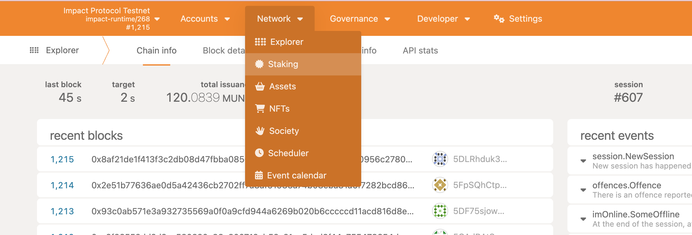
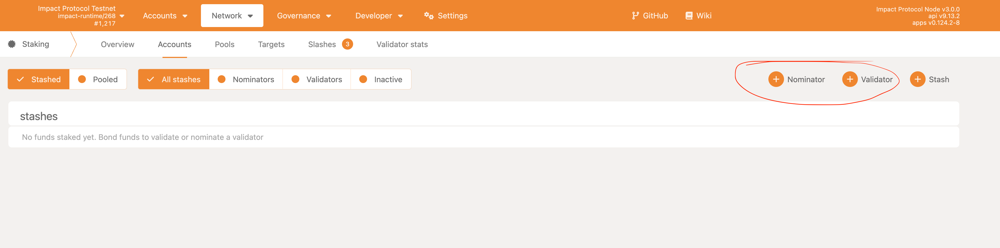
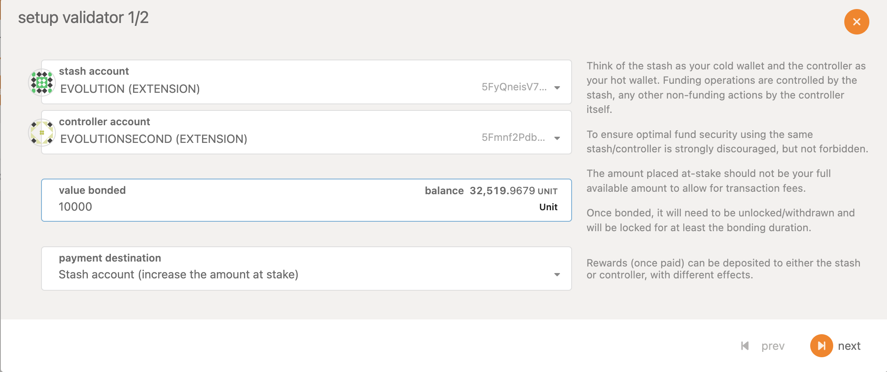
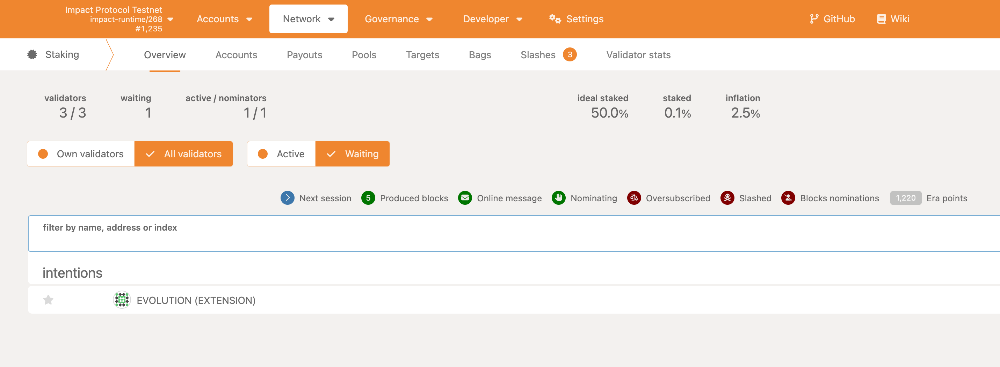

Introduction
Impact protocol is a revolution
Getting Started
In this section, we will explain how to run Impactprotocol and send confidential/anonymous transactions.
Install Instructions
If on Linux or Mac:
- follow instructions 1-10 from link below: https://docs.substrate.io/install/linux/
If on Windows
-
follow these steps: https://www.omgubuntu.co.uk/how-to-install-wsl2-on-windows-10 Make sure WSL2 is running:
wsl -l -v -
run the next commands inside the VM:
sudo apt-get update sudo apt install --assume-yes git clang curl libssl-dev llvm libudev-dev make protobuf-compiler sudo apt install build-essential curl --proto '=https' --tlsv1.2 -sSf https://sh.rustup.rs | sh source $HOME/.cargo/env rustc --version rustup default stable rustup update rustup update nightly rustup target add wasm32-unknown-unknown --toolchain nightly rustup showrustup +nightly show
Next steps for Linux & Windows
-
Clone the repository:
git clone https://github.com/GlobalBoost/impactprotocol -
Change to the
impactprotocoldirectory:cd impactprotocol -
Build the project:
cargo build --releaseThis will take some time to build the binary depending upon your system configuration.
-
Once the build is done in the above step, run the below command to generate the mining key
./target/release/impact generate-mining-key --chain=impact-testnet -
Import your mining key. Replace your seed which you generated above:
./target/release/impact import-mining-key <replace_your_seed_phrase> \--base-path /tmp/impactnode \--chain=impact-testnet -
Then put your public key you generated before in the command below as author
./target/release/impact \ --base-path /tmp/impactnode \ --chain=impact-testnet \ --port 30333 \ --ws-port 9945 \ --rpc-port 9933 \ --telemetry-url "wss://telemetry.polkadot.io/submit/ 0" \ --validator \ --author public key here \ --rpc-methods Unsafe \ --name ImpactNode \ --password-interactiveThis will ask for a keystore password, enter any random password
-
Now you should begin to mine. You are running an Impact Protocol test net node, please check in the console and you will be seeing the blocks getting finalized
-
You can check your node running by going into the link below
Polkadotjs. If you dont see anything loading check your port address in this case it is
9945, you may have some other port configured, check and replace accordingly.You should see something like shown below

-
Now you need to install an extension: https://polkadot.js.org/extension on Google Chrome or Firefox. Import account with pre-existing seed that you generated in step 4. Enter your public key and set a password. Its shown below

Validating and Staking in Substrate Chains
Introduction
Staking is a process of holding or locking up a certain amount of tokens in a blockchain network to support the network and validate transactions. By staking, a validator can earn rewards and maintain the stability of the network.
Substrate is a framework for building blockchain applications and networks, and it allows for easy implementation of staking.
Validating in Substrate
To become a validator in a Substrate-based network, you need to have a certain amount of tokens in your wallet and be willing to lock them up for a certain period of time.
Once you have the required tokens, you can follow these steps to become a validator:
-
Connect to the network using a Substrate node.
-
Create a stash account and a controller account. The stash account is where your staked tokens will be held, and the controller account is used to manage the stash account.
-
Bond your tokens by transferring them from your wallet to the stash account.
-
Set up your validator preferences, such as commission rate and minimum self-bond amount.
-
Submit a nomination transaction to nominate yourself as a candidate for validation.
-
Wait for the next election round to start and be elected as a validator.
Staking Rewards
As a validator, you can earn rewards for successfully validating blocks and adding them to the network. The amount of rewards you can earn depends on several factors, such as the total amount of tokens staked in the network, your commission rate, and the network's reward policy.
Risks and Challenges
While staking can be a lucrative opportunity, it also comes with certain risks and challenges. As a validator, you need to be prepared to face the following risks:
-
Slashing: If you are found to be violating the network's consensus rules, your staked tokens may be partially or fully slashed.
-
Liveness: If your validator node is down, you may miss the opportunity to validate blocks and earn rewards.
-
Competition: With the increasing popularity of staking, the competition among validators is becoming more intense, and it may be harder to earn rewards in highly competitive networks.
To minimize these risks, it is important to choose a reliable network and take the necessary precautions, such as using high-availability infrastructure and keeping your validator node running 24/7.
Conclusion
Staking in Substrate-based networks can be a rewarding opportunity for those who are willing to hold and lock up their tokens for a certain period of time. However, it also comes with certain risks and challenges, and it is important to be prepared and make informed decisions before becoming a validator.
Running as a validator
Setup for the validator
-
Running the node - this we have already done in the installation step and have an account created with the existing seed
-
Make sure to generate the keys that is needed while running as validator, follow the step below to generate the keys, go to bash or any shell and run the command below
curl -H "Content-Type: application/json" -d'{"id":1, "jsonrpc":"2.0", "method": "author_rotateKeys", "params":[ ]}' http://localhost:9933Copy the keys from the output of the above command and save it.
-
Get the minimum required stake of tokens for testnet please request here Testnet_Group
-
Create another account as the controller account to manage the stash account. Go to the polkadotjs chrome extension and make create account, and make sure you save the seed phrase in a secure place. Fund the controller account as well using the above group
-
Head over to the polkadot explorer and click the staking button under the Network tab as shown below
 -
Once in staking go to accounts and you will see the nominator and validator button as shown below, first lets discuss about validator 
-
Click on the validator and select the account which you want to be stash and controller account as shown in the picture below
 -
Now click next, enter the keys you generated in step 2 above. You can select whether you want to be nominated and set a commission percentage. Now click bond and validate and then submit button. Shown below
-
Once done you should see your validator in the waiting to become as validator
